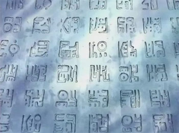

历史正文
是指和之国光月一族的先人门在空白100年间，将历史刻在无法被破坏的石头上，并且送到世界各地去。研究历史本文的行为被世界政府定义为犯罪。石碑上的文字只有石碑制造者——光月一族与生活在奥哈拉的学者才能解读。因为长时间下来，光月一族解读历史正文的解读方法和石碑内容在桃之助父辈一代就已经失传了，再加上奥哈拉的毁灭，历史本文仅剩罗宾一人可以解读。要将上所记载的文字全部串联起来才能变成一篇填补空白历史的文章，只有这篇串联而成的文章才是“真正的历史正文”，就能知道空白的100年的历史。“海贼王”哥尔·D·罗杰已经将这篇文章送往伟大航道的尽头“拉夫德鲁”。
记载着“拉夫德鲁”最终点的四块石头皆为红色，被称为【Road历史正文】。赤之石【Road历史正文】世界上一共有4块，每块赤之石上记录着一个地点，当知道了这些位置，在地图上把四个点连结之时，在中心浮现的就是最后之岛“拉夫德鲁”。现在赤之石一块在佐乌由和之国的光月一族掌管，一块下落不明，剩下两块分别由四皇夏洛特·玲玲与四皇凯多掌管着一块。